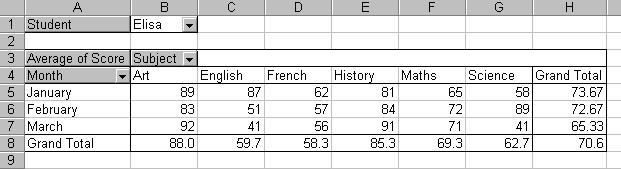

Free
computer Tutorials
|
Free
computer Tutorials
|
|
 HOME
HOME
|
Stay at Home and Learn | ||||
Microsoft Excel and Pivot tables
As you'll shortly see, Pivot Tables can become quite complex. So we'll take it easy and just design a simple one. But first, what is a Pivot table?
What is a Pivot table?A Pivot table is to a way to extract data from a long list of information, and present it in a readable form. Remember the data we had from the student scores spreadsheet? You could turn that into a pivot table, and then view only the Maths scores for each pupil. Or view just Paul's scores, and nobody else's. To get a clearer idea of just what a Pivot Table is, examine the one below. You'll be designing this very Pivot Table yourself shortly.  In this school, there is a test every month (it's a tough school!). The Pivot Table above shows the marks that Elisa got in January, February, and March. There were tests for only 6 subjects. Notice the black down-pointing arrows in the Pivot Table. On Row 1 we have Student Elisa. If the black arrow were clicked, a drop-down box would appear showing a list of the other students. We could click on a student and view the marks he or she achieved. Or we could select which subjects to view, or choose only one month. But Excel does most of the work for you, and puts in those drop-down boxes as part of the wizard. But you'll see how it works. Before you can construct a Pivot Table, you need some data in list form. We're going to construct our Pivot Table using only two students, Elisa and Mary. We'll use just three months worth of data, and six subjects. You'll be glad to know that this has already been done for you. So download the spreadsheet below: In the next part, you'll start work on constructing the Pivot Table itself. |
|||||
|